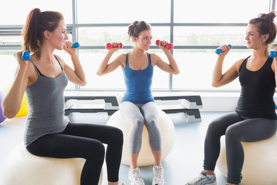
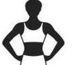
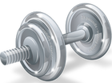

Gymnasia apparatus such as bar-bells, parallel bars, jumping board, running path, tennis-balls, cricket field, fencing area, and so forth are used as exercises. In safe weather, outdoor locations are the most conductive to health.[2] Gyms were popular in ancient Greece.
Local and Convenient
Gymnasia apparatus such as bar-bells, parallel bars, jumping board, running path, tennis-balls, cricket field, fencing area, and so forth are used as exercises. In safe weather, outdoor locations are the most conductive to health.Gyms were popular in ancient Greece.
Check out for Free!
Gymnasia apparatus such as bar-bells, parallel bars, jumping board, running path, tennis-balls, cricket field, fencing area, and so forth are used as exercises. In safe weather, outdoor locations are the most conductive to health.Gyms were popular in ancient Greece.


Ladies Section
Gymnasia apparatus such as bar-bells, parallel bars, jumping board, running path, tennis-balls, cricket field, fencing area, and so forth are used as exercises.
The Gym Floor
Gymnasia apparatus such as bar-bells, parallel bars, jumping board, running path, tennis-balls, cricket field, fencing area, and so forth are used as exercises.

Free Weight
Gymnasia apparatus such as bar-bells, parallel bars, jumping board, running path, tennis-balls, cricket field, fencing area, and so forth are used as exercises.